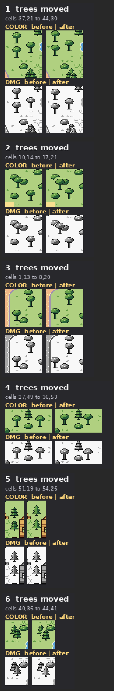
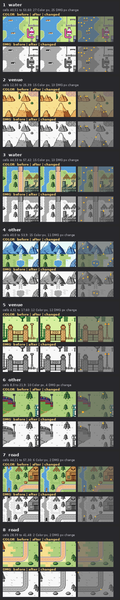
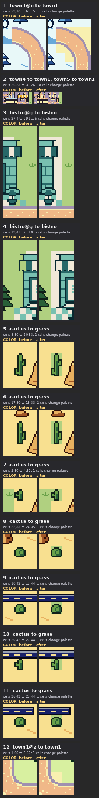
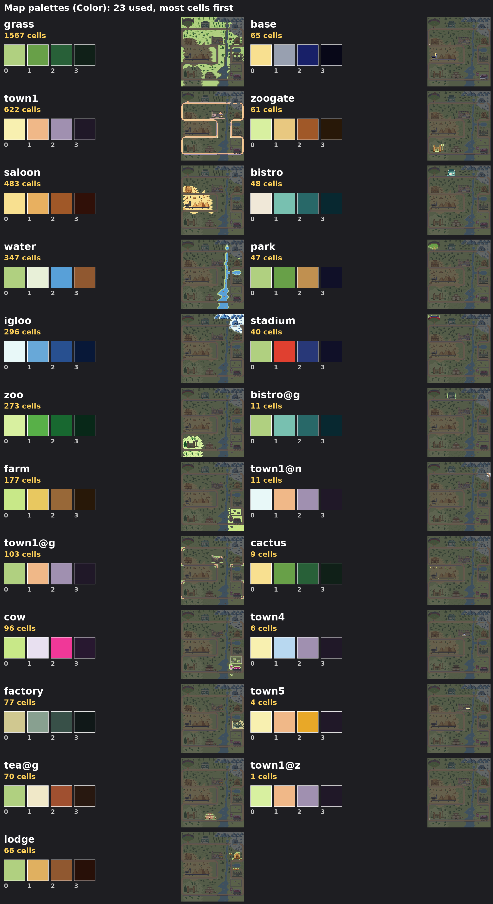
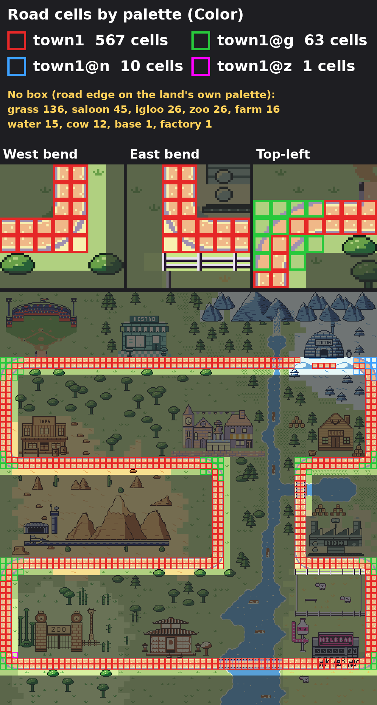

Open questions
One question per card. Each choice has its picture right under it.
1 open · updated 2026-11-08
Q10
Which map savings should I make?
Say yes or no to each of the three changes below.
1. Trees: fewer positions I say yes
- 22 trees shift by up to 4 pixels
- Saves DMG 12 tiles, Color 23

2. Tiny pixel differences I say yes
- 1 or 2 pixels change in a tile, mostly mountain, road and river edges
- The river loses some sparkle dots
- Saves DMG 42 tiles, Color 64; tightest DMG screens 176 to 169 of 176
- Picture: before, after, changed pixels marked

3. Merge small colour sets I say no
- Color only
- Cacti get a green square in the sand
- Cream pads appear on snow and grass by the town and bistro
- Saves no tiles; frees colour slots

Answer like: Q10 trees yes, pixels yes, colours no
FOR REFERENCE (nothing to answer)
Map colour sets

Road colour sets

Saloon dancer

Cheerleader